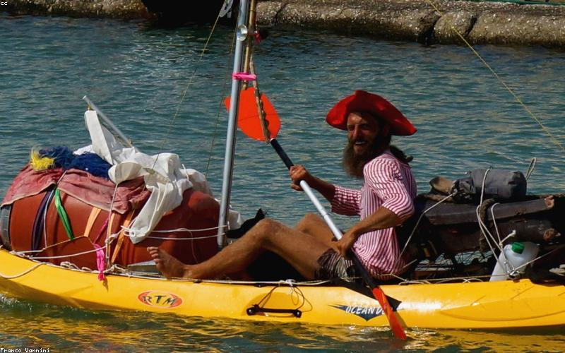
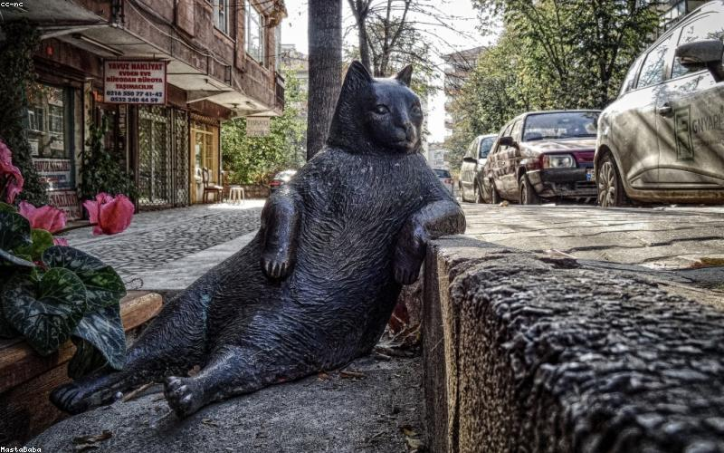
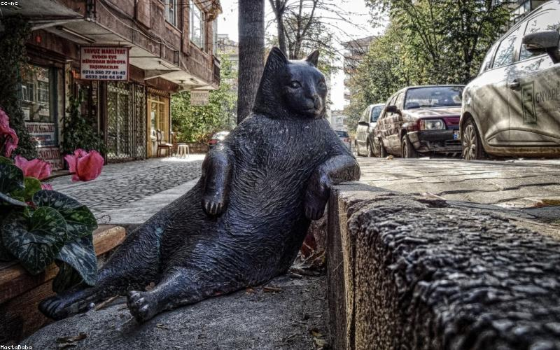
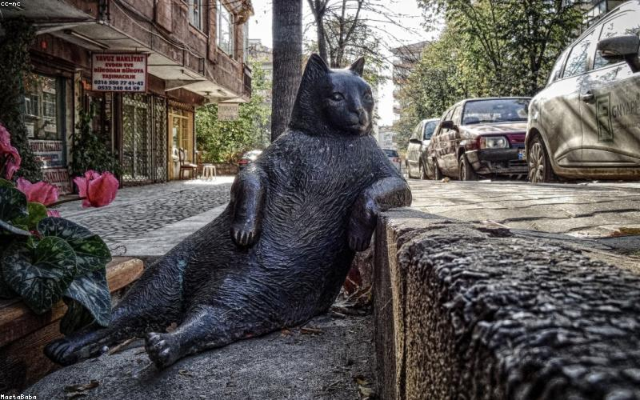
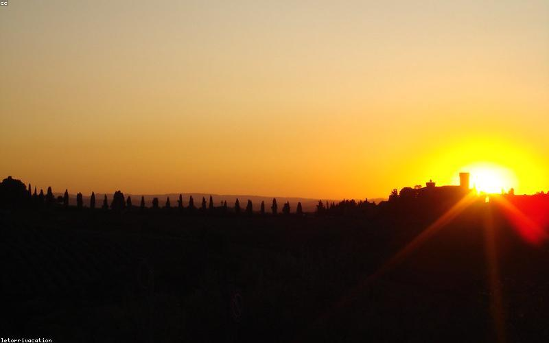

Castiglione della Pescaia est une petite ville côtière de la province de Grosseto, située dans le cœur de la Maremme toscane. Avec son village médiéval perché sur une colline, son port de pêche, ses plages de sable fin bordées de pinèdes centenaires et la proximité immédiate du Parc naturel de la Maremme, elle figure parmi les destinations balnéaires les plus authentiques d'Italie. Pour une vue d'ensemble du continent, consultez notre guide complet Europe.
Pourquoi Visiter Castiglione della Pescaia
Contrairement à Florence, Sienne ou San Gimignano saturées de touristes, Castiglione della Pescaia offre une Toscane plus confidentielle, plus maritime et plus sauvage. La ville est régulièrement classée parmi les Bandiere Blu (Pavillon Bleu) par la Foundation for Environmental Education (FEE), label international garantissant la qualité des eaux de baignade et la gestion durable du littoral. Elle est également distinguée comme l'une des « Cinq Voiles » (Cinque Vele) par Legambiente, ONG environnementale italienne qui récompense chaque année les localités côtières les mieux préservées d'Italie.
Un village aux trois visages
Castiglione della Pescaia combine trois identités complémentaires : une ville haute médiévale fortifiée, un port de pêche actif avec des bateaux colorés qui reviennent chaque matin, et une longue plage de sable bordée par l'immense Pineta del Tombolo, pinède plantée au XIXe siècle pour stabiliser les dunes.
Une destination historique de la gauche italienne
Italo Calvino, figure majeure de la littérature italienne du XXe siècle, passait ses vacances à Castiglione della Pescaia dans les années 1980 et a choisi d'y être enterré. Sa tombe se trouve dans le petit cimetière marin, devenu un lieu de pèlerinage littéraire.

Comment Se Rendre à Castiglione della Pescaia
Castiglione della Pescaia est idéalement située au centre de la côte toscane, accessible depuis plusieurs aéroports internationaux sans avoir à traverser toute l'Italie.
En avion
Les aéroports les plus proches sont Pise (140 km, 1h45 de route) et Rome Fiumicino (190 km, 2h15 de route). Pise est généralement plus pratique pour les voyageurs venant de France avec des vols Ryanair, easyJet, Volotea et Transavia depuis Paris, Lyon, Marseille, Nice, Nantes et Bordeaux. L'aéroport de Florence (170 km) est une troisième option, souvent plus chère mais pratique si vous combinez plage et visite de la Toscane intérieure.
En train et en voiture
La gare de Grosseto, à 20 km, est la plus proche. Elle est desservie par les trains Intercity et Frecciabianca de Trenitalia depuis Rome (2h), Pise (1h45) et Florence (2h30). Depuis Grosseto, des bus locaux et des taxis rejoignent Castiglione della Pescaia en 25-30 minutes. En voiture, l'autoroute A12 Livorno-Civitavecchia puis la SS1 Via Aurelia sont les axes principaux. Une voiture de location est très recommandée pour explorer pleinement la Maremme.
Astuce ferry
Si vous voyagez en famille ou avec votre propre véhicule, les ferries depuis la France (Marseille, Toulon, Nice) vers Livourne ou Civitavecchia sont une alternative agréable, avec Corsica Ferries et La Méridionale. Comptez 12 à 15 heures de traversée.
Le Village Médiéval Fortifié
La partie la plus ancienne de Castiglione, le Castello, est juchée sur une colline dominant la mer Tyrrhénienne. Cet ensemble médiéval parfaitement conservé justifie à lui seul une visite de la ville.
Les remparts et le château
Les remparts médiévaux ceinturent le vieux village sur presque toute sa circonférence. Construits au XVe siècle par les Aragonais, renforcés ensuite par les Médicis au XVIe siècle, ils comportent encore plusieurs tours, une imposante porte fortifiée et le château lui-même, propriété privée mais visible depuis les ruelles avoisinantes.
Flâner dans les ruelles
Les ruelles pavées de la ville haute, étroites et fleuries, invitent à une balade contemplative. De nombreux points de vue offrent des panoramas sur la mer et la côte. Les petites places abritent des trattorias familiales, des boutiques d'artisanat et la petite église San Giovanni Battista.
Conseil photo
Montez au village en fin d'après-midi : la lumière dorée sublime les pierres ocre des remparts, et le coucher de soleil depuis le belvédère face à la mer est un moment inoubliable.
Les Plus Belles Plages de Castiglione della Pescaia
La région offre des kilomètres de plages de sable fin, bordées par la pinède, avec une eau limpide et des fonds sableux adaptés aux familles comme aux sportifs.
Plage centrale : Le Rocchette et Riva del Sole
La plage principale de Castiglione s'étend au pied du village et alterne zones libres et stabilimenti balneari (lidi privés payants). Plus au sud, la plage des Rocchette est un joyau : une petite crique de sable blanc encadrée de rochers, avec une tour médiévale en arrière-plan, classée parmi les plus belles plages de Toscane.
Punta Ala et Cala Violina
À environ 20 minutes de route au nord, Punta Ala est une station balnéaire chic, avec un port de plaisance haut de gamme. Mais c'est surtout Cala Violina, plage sauvage accessible uniquement à pied (20 minutes de marche à travers la pinède), qui est considérée comme l'une des plus belles d'Italie : son sable, constitué de grains de quartz, « chante » lorsqu'on marche dessus, d'où son nom (violina signifie « petit violon »). L'accès est limité en été pour préserver le site : une réservation en ligne gratuite est obligatoire via le portail officiel du tourisme de la Maremme.
Le parasol gratuit
Pour économiser, apportez votre propre parasol et vos serviettes. De nombreuses zones libres permettent de profiter de la plage sans payer les 25-40 € quotidiens d'un lido. Les meilleures zones libres se trouvent à l'extrémité nord et sud de la plage principale.

Parc Naturel de la Maremme : Nature Sauvage et Randonnées
Le Parco Regionale della Maremma, créé en 1975, est l'un des plus beaux parcs naturels d'Italie. Il couvre 89 km² de territoire protégé entre Castiglione della Pescaia et Talamone, incluant des pinèdes, des marais, des collines calcaires, des plages sauvages et une faune exceptionnellement riche.
Faune et flore
Le parc abrite des sangliers, des chevreuils, des porcs-épics, des renards, des cerfs élaphes et une avifaune remarquable : flamants roses, hérons cendrés, cigognes, martins-pêcheurs. Les marais saumâtres attirent les oiseaux migrateurs toute l'année. Les informations officielles et les itinéraires de randonnée sont disponibles sur le site officiel du Parc régional de la Maremme.
Les itinéraires de randonnée
Le parc propose plusieurs sentiers balisés de difficulté variable, de 2 à 15 km. L'itinéraire A1 (Le Torri) mène à des tours de guet médiévales avec vue mer. L'itinéraire A4 (Cala di Forno) descend jusqu'à une plage sauvage inaccessible par la route. En été, l'accès à certains sentiers se fait uniquement en visite guidée pour prévenir les incendies.
Conseil visite
Réservez votre entrée au centre des visiteurs d'Alberese, point de départ obligatoire. Les tarifs vont de 10 à 15 € par adulte selon l'itinéraire. Prévoyez chaussures de marche, chapeau, eau et crème solaire.
Gastronomie : Cuisine Toscane de la Côte
La gastronomie de la Maremme combine les traditions paysannes toscanes et les influences maritimes. C'est une cuisine authentique, généreuse, souvent oubliée dans les circuits touristiques classiques mais qui vaut largement le détour.
Les spécialités incontournables
La caciucco alla livornese, soupe de poissons à base de cinq variétés différentes, les spaghetti alle vongole (palourdes), les pici (pâtes fraîches toscanes typiques, faites à la main), le cinghiale in umido (sanglier mijoté au vin rouge, plat typique de la Maremme), les fromages de brebis (pecorino toscano) affinés avec de l'huile d'olive ou du piment, et l'huile d'olive extra-vierge DOP de la Maremme.
Vins de la côte toscane
La région produit des vins rouges remarquables, en particulier les appellations Morellino di Scansano DOCG (à base de sangiovese, frais et fruité), Montecucco et Maremma Toscana IGT. De nombreuses caves familiales proposent des dégustations dans un rayon de 20 km autour de Castiglione. Le Consortium de protection du Morellino di Scansano recense les meilleures adresses.
Meilleures adresses locales
Les trattorias familiales du village haut (Castello) et les restaurants du port proposent les meilleurs rapports qualité-prix. Fuyez les établissements avec photos de menus plastifiées, signe d'une cuisine touristique. Préférez les adresses fréquentées par les locaux, où le menu change selon la pêche du jour.

Budget et Conseils Pratiques
Castiglione della Pescaia est une destination plus abordable que les stars toscanes comme Forte dei Marmi ou Porto Ercole, tout en offrant une expérience comparable en termes de paysages et de qualité.
Budget quotidien par personne
Économique (60-90 €/jour) : B&B ou camping en pinède, repas simples dans les trattorias, plages libres, vélo ou scooter. Confort (130-200 €/jour) : hôtel 3-4 étoiles, un lido payant, restaurant gastronomique le soir, dégustation de vins. Premium (280 €/jour et plus) : villa ou hôtel 4-5 étoiles face à la mer, tables gastronomiques, excursions privées.
Quand partir à Castiglione della Pescaia
La meilleure saison va de mai à octobre. Les mois idéaux sont mai, juin et septembre, avec des températures agréables (22-28°C), une mer déjà (ou encore) chaude, moins de monde qu'en plein été et des tarifs d'hébergement raisonnables. Juillet et août sont très fréquentés et chauds, avec des prix majorés de 30 à 60 %. Avril et octobre sont parfaits pour les amateurs de randonnée dans le parc de la Maremme.
Sécurité et informations pratiques
Castiglione della Pescaia est une destination très sûre. Les conseils aux voyageurs de France Diplomatie classent l'Italie comme un pays globalement sûr, avec les précautions d'usage en haute saison touristique. Comme partout en Italie, les transactions en espèces restent courantes dans les petits commerces : gardez toujours un peu de liquide sur vous.

Castiglione della Pescaia se combine idéalement avec d'autres pépites de la Maremme dans un circuit d'une semaine : l'ancien port étrusque de Populonia, les sources thermales libres de Saturnia (bassins naturels d'eau chaude sulfureuse gratuite), la ville médiévale perchée de Pitigliano (surnommée « la petite Jérusalem ») et la réserve naturelle WWF du Lago di Burano. Ce circuit permet de découvrir une Toscane authentique, loin des foules de Florence et des chianti classiques, tout en profitant d'une base balnéaire confortable.
Pour prolonger votre découverte de l'Europe, retrouvez notre sélection des plus belles villes européennes, nos idées de week-ends en Europe pas chers, ou notre guide de San Vito Lo Capo en Sicile, autre joyau balnéaire méditerranéen. Le guide complet Europe vous aidera à planifier l'ensemble de votre séjour.